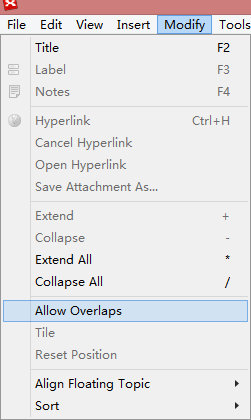
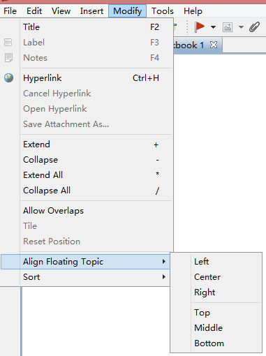

Alignment
You can align any topics block on the map as follows:
- Select the topics you want to align.
- You can align the topics and change attributes by the following ways:
- Choose 'Modify> Alignment > Left/Center/Right...' on the menu to align the selected topic blocks.
- Choose 'Modify > Allow Overlaps' on the menu to allow topic blocks to overlap one another.
- Choose 'Modify > Tile' on the menu to arrange the topic blocks in a tiled manner.
- Choose 'Modify > Reset Position' on the menu to move the block back to its default position.


You can see all the command meanings following:
- Left : All selected Topics are left aligned.
- Center : All selected topics are center aligned.
- Right : All selected topics are right aligned.
- Top : All selected topics are top aligned.
- Middle : All selected topics are middle aligned.
- Bottom : All selected topics are bottom aligned.
- Allow Overlaps : All topics can be placed overlapping each other.
- Tile : Tile all ovelapped topics.
- Reset Position: Return all main branches to their default position.